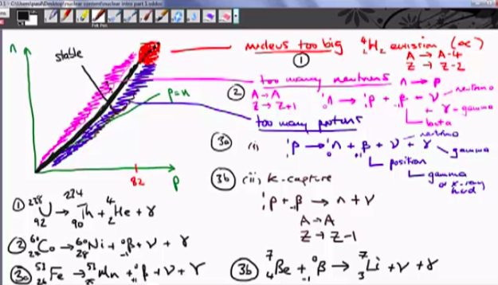
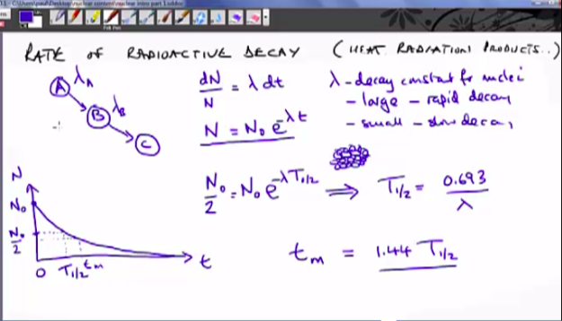
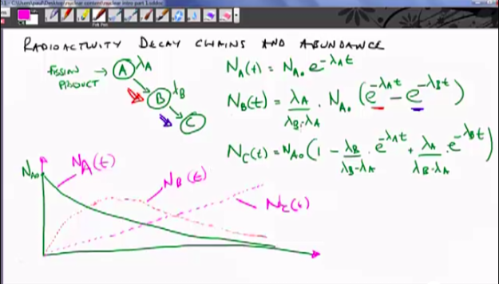
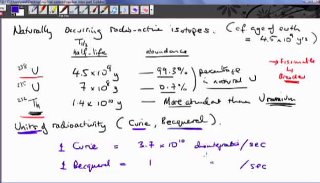

Index
- Section 0
- Section 1 - Nuclear Basics
- Lecture 1.0 - Learning outcomes and technical tour
- 1.1 Atoms and Nuclei
- 1.2 - Nuclear Structure & Nuclear Reactions
- 1.3 Isotopes and Radioactivity
- 1.4 Radiation and Interactions with MAtter
- Section 2 - Neutrons and Fission
1.3 Isotopes and Radioactivity
Isotopes of matter need more neutrons to be stable with higher number of protons3 main reactions:
• NUCLEUS TOO BIG
No stability after p=82, all isotopes are unstable- Trans-Uranium
Alpha decay will occur ejecting a helium nucleus & gamma radiation
• TOO MANY NEUTRONS
Above line of stability there are too many neutrons
Tendancy for neutrons to convert to protons by beta devay, ejecting a beta particle and a neutrino
may also be gamma emmission if proton is excited and decays to base state
1. TOO MANY PROTONS
Below stability line there are too many protons
Two posibilities,
proton may become a neutron and emit a neutrino and a positron as beta decay (opposite of an electron)
like in the neutron-proton change gamma may be released if new proton is excited
positron will combine with electron in inner shell and release radiation
Also K capture could create neutron by absorbing electron into proton and emits a neutrino & gamma

Importance of radioactivity in nuclear power systems
Fission products will be unstable and neutron rich and will therefore decay, they will emit heat and radiation
Halflife and the decay constant lamdba

Decay in radioactive chains.

Abundance is related to decay and half-life, high abundance generally means low half-life.
Units of radioactivity
